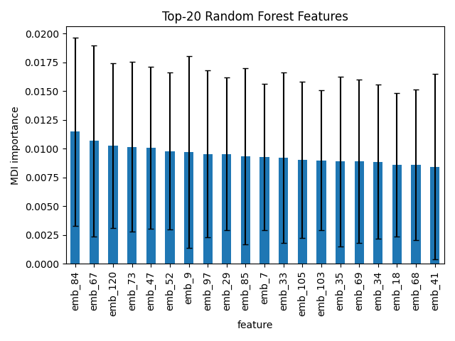

Interactive
Word Association
Enter a single word to see how trials containing that word align with success or failure in the labeled dataset.
Powered by ctg-studies.csv and labeled embeddings.
Type a word to see results.



Trial2Vec
A quick visual tour of how the model behaves, what drives predictions, and how well it separates outcomes.
Interactive
Enter a single word to see how trials containing that word align with success or failure in the labeled dataset.
Powered by ctg-studies.csv and labeled embeddings.
Type a word to see results.
